비서-3급 (2015-11-22 기출문제)
1과목: 비서실무
1. 다음 중 비서에 대한 정의로 가장 부적절한 설명을 고르시오.
- 비서의 어원은 중세 라틴어의 secretarius에서 나온 말로 '비밀을 맡길 수 있는 사람'이란 의미이다.
- 비서는 조직의 철학을 이해하고, 제반 사무관리 능력을 갖추어 경영자가 업무수행을 효율적으로 할 수 있도록 지원하고 보좌하는 사람으로 풀이된다.
- 비서는 숙달된 사무기술을 보유하고 직접적인 감독하에 책임을 수행할 능력을 발휘하는 사람이다.
- 상사가 고유의 업무를 원활히 할 수 있도록 상사와 함께 업무를 처리하고 업무 수행과 관련된 제반 환경을 관리하는 사람을 뜻한다.
(정답률: 76%)

2. 비서의 경력계발 방안으로 바람직하지 않은 것은?
- 커리어 관리를 위해 이직에 대비하여 취업정보와 구인 정보를 지속적으로 업데이트한다.
- 새로운 컴퓨터 프로그램 관련 자격증 취득을 위해 퇴근 후 학원에 다닌다.
- 인간관계관리와 업무역량향상을 위해 퇴근 후 상사 지인과 고객의 비서들과 자주 어울려 업무정보를 공유한다.
- 상사가 담당하고 있는 분야의 업무를 빨리 파악하기 위해 비서를 거쳐 상사에게 전달되는 문서는 그 내용을 읽고 숙지한다.
(정답률: 71%)
3. 다음은 일정관리의 요령에 대한 설명이다. 가장 바르게 설명된 것을 고르시오.
- 일정표는 비서가 부재중일 때라도 다른 사람들이 상사 일정을 확인할 수 있도록 공유한다.
- 상사의 취향과 기기의 연동이 가능하다면 스마트 기기를 활용한 일정관리를 능동적으로 활용한다.
- 일정 보고는 구두 보고를 원칙으로 하여 전달의 오류를 최소화하여야 한다.
- 과거 일정표는 보안을 위하여 1년 뒤에는 폐기시키도록 한다.
(정답률: 63%)
4. 다음 중 전화 부가서비스에 대한 설명으로 옳지 않은 것은?
- 착신 전환 : 걸려오는 전화를 지정해 둔 조건별(무조건 착신 전환, 조건 착신전환)로 등록된 다른 착신 번호로 전환할 수 있는 기능이다.
- 변경 번호 안내 : 전화번호 변경, 해지 등의 사유로 전화 번호가 변경되었을 경우 변경 전 전화번호로 전화를 건 발신자에게 새로운 전화번호를 자동으로 안내해 주는 서비스이다.
- 대표 번호 : 사용하는 모든 번호를 하나로 통합 관리하는 서비스이다. 사무실 전화, 이동 전화, 집 전화 등의 번호를 1개의 번호로 통합할 수 있다.
- 회의 통화 기능 : 동시에 세 사람 이상이 함께 통화할 수 있는 기능이다. 키폰에 따라 6명까지 동시에 회의 전화에 연결될 수 있다.
(정답률: 71%)
5. 조상무의 비서는 부사장과 직접 통화하기를 원하는 조상무를 위해 전화를 연결하였다. 다음 중 가장 올바른 것은?
- 부사장과 연결이 되면 “안녕하십니까? 조상무님 비서입니다. 지금 상무님께서 통화를 원하십니다. 잠시만 기다려 주시겠습니까?” 하고 상무와 전화연결을 시킨다.
- 부사장 비서와 통화해서 연결할 때 조상무가 부사장보다 먼저 전화상에서 기다리도록 한다.
- 부사장 핸드폰으로 직접 연결하여 신호음이 들릴 때 조상무와 연결시키도록 한다.
- 부사장실에 전화하여 부사장의 재실여부를 확인 후 조상무가 직접 부사장실로 전화하도록 한다.
(정답률: 82%)
6. 새로 입사한 신입비서인 김영숙 비서가 회사 내 대인관계 업무에 신속하게 적응하기 위해 노력하는 자세로 적절하지 않은 것은?
- 회사의 조직도를 프린트해서 간부와 직원들의 이름, 소속과 직책, 기타 특징을 외우고 있다.
- 상사와 자주 만나는 내방객을 잘 기억하기 위해 외형적 특징을 명함 옆 이름에 별칭을 연필로 적어두었다.
- 상사의 개인사에 대해 동료들이 질문하면 함구한다.
- 상사의 업무 영역에는 사전에 합의된 범위를 넘어서서 개입하지 않는다.
(정답률: 76%)
7. 다음은 오늘 상사 일정이다. 상사의 일정관리를 수행하는 비서의 업무로 가장 적절하지 않은 것은?
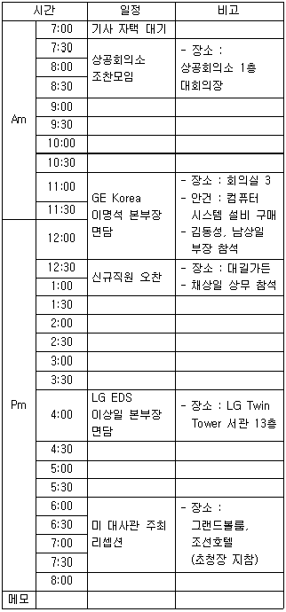
- 사무실에서 LG Twin Tower까지의 이동경로와 이동시간을 확인한 후 운전기사를 대기시킨다.
- 상공회의소 조찬모임 관련 자료는 아침 일찍 기사에게 전달하여 잊지 않도록 한다.
- 오찬장소로 이동할 때는 채상일 상무에게 상사를 모시고 갈 것을 부탁한다.
- 리셉션 초청장은 상사가 호텔로 출발하기 전에 상사에게 전달한다.
(정답률: 77%)
8. 상사의 출장 보좌 업무 중 항공권 예약 시 비서가 확인해야 할 사항으로 다음 중 중요도가 가장 낮은 것을 고르시오.
- 여권번호 - 항공편명(airline)
- 출발 및 도착 일시 – 영문 성명
- 예약번호 – 도착 공항명
- 좌석 등급 – 비행기 편명(flight no.)
(정답률: 65%)
9. 상사의 해외출장을 위해 김비서는 호텔을 예약하면서 호텔로 다음과 같이 이메일을 보냈다. 다음 중 잘못된 설명은?
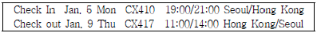
- 호텔에 체크인 시간이 밤시간이므로 예약 시 항공일정을 보내면서 호텔 측에 예약을 취소하지 않도록 다시 한번 확인한다.
- CX410, CX417은 비행기 편명이다.
- 호텔 체크아웃 시간은 1월9일 11시부터 14시 사이에 하면 된다.
- 비서는 상사의 홍콩출장을 위해 호텔에 4박을 예약하면 된다.
(정답률: 78%)
10. 다음 중 출장 일정표에 필수적으로 기입되어야 할 내용으로 그 중요도가 가장 낮은 것을 고르시오.
- 출장 중의 회의 장소 및 담당자 연락처 등을 기입한다.
- 긴급 연락처로서 현지 지사 및 주재원, 재외공관 등의 주소 및 연락처를 표기한다.
- 항공 예약 재확인을 위하여 현지 항공사 연락처를 표기한다.
- 출장지의 날씨 정보를 표기한다.
(정답률: 75%)
11. 회의의 사전 준비 업무의 순서로 가장 적절한 것은?
- 회의일시 결정 → 회의장 확보 → 통지문 발송 → 참석자 명부 작성 → 회의자료 작성
- 회의장 확보 → 회의일시 결정 → 참석자 명부 작성 → 통지문 발송 → 회의자료 작성
- 회의일시 결정 → 회의장 확보 → 참석자 명부 작성 → 통지문 발송 → 회의자료 작성
- 회의장 확보 → 회의일시 결정 → 통지문 발송 → 회의자료 작성 → 참석자 명부 작성
(정답률: 76%)
12. 회의 통지와 관련된 유의사항이다. 가장 부적절한 설명을 고르시오.
- 정기적인 회의는 참석자의 수가 적더라도 반드시 회의 통지서를 우편으로 발송한다.
- 회의 참석 여부를 알아야 하는 경우에는 참석 여부를 회신해 줄 것을 통지서에 기입하도록 한다.
- 회의 통지서에는 회의의 안건이 포함되도록 한다.
- 회신 마감일을 표기하면 마감일 이전에 상대방의 회신을 유도하여 참석여부 확인이 용이하다.
(정답률: 71%)
13. 효과적인 보고 자세에 대한 설명이다. 가장 부적절한 내용을 고르시오.
- 긴급한 상황일때는 다소 부족하더라도 파악된 내용을 먼저 보고하도록 한다.
- 보고는 결론을 먼저 말하고 필요한 경우 이유, 경과 등의 순서로 한다.
- 상사가 판단을 용이하게 하게 위하여 객관적사실 외에도 분위기, 추측, 감정적인 내용도 함께 전달하여야 한다.
- 보고가 끝나면 내용을 정리하여 잘 보관하도록 한다.
(정답률: 65%)
14. 다음은 비서가 숙지해야할 내방객 응대 요령이다. 가장 바르게 설명된 것을 고르시오.
- 입찰에 참여하는 다수 기업의 내방객들은 서로의 정보교환을 위하여 동일한 대기실에서 자연스럽게 환담을 나눌 수 있도록 배려한다.
- 상사의 업무를 방해하지 않도록 일정표에 이미 기입되어 있는 내방객 방문의 경우에는 별도의 상기(reminding) 작업은 수행하지 않아도 된다.
- 상사의 대리자로서 내방객을 응대할 경우 지시받지 못한 부분이라도 내방객에 질문한다면 친절하게 아는 만큼 설명을 해 드린다.
- 상사가 약속을 지킬 수 없는 경우 용건에 따라서는 관련 업무 담당자를 소개할수도 있다.
(정답률: 76%)
15. 직장 내 올바른 호칭과 화법 상황 중 가장 적절한 것을 고르시오.
- “팀장님! 사장님은 회장님실에 계십니다.”
- 문서작성시 '사장님 특별주문'이라 표기하였다.
- “이사님! 서류를 사장님실 책상 위에 올려놓았습니다.”
- 나이가 어린 입사 선배에게 “김주임님! 서류 전달했습니다.”
(정답률: 71%)
16. 한비서는 상사의 사회적 위치와 다양한 대외 관계로 인해 결혼식에 자주 참석할 경우가 많다. 한비서는 평소에 경조사에 쓰이는 봉투를 구비해 두는데 특히 결혼식 봉투를 넉넉히 구입하여 필요할 때마다 바로 쓸 수 있도록 준비해 둔다. 다음 중 결혼식 봉투에 사용하기 적절하지 않은 문구를 고르시오.
- 祝結婚
- 祝華婚
- 祝盛典
- 祝壽宴
(정답률: 52%)
17. 비서는 상사의 업무 효율성을 높이기 위해 사무실 환경 점검표를 작성하고 이에 따라 사무환경을 쾌적하게 관리해야한다. 다음은 비서의 사무환경관리 업무 내용이다. 이 중 가장 올바르지 않은 비서의 업무처리 방식은?
- 책상이나 가구를 배치하는 경우에는 동선을 단축시키도록 하여야 한다.
- 오피스의 카펫 청소는 주기적으로 하고 최소한 6개월을 주기로 전문업체를 통해 물청소를 한다. 이때 물청소로 인해 하루 정도 건조를 해야 하므로 가급적 금요일 오후에 하도록 한다.
- 비서실 내 화장실이나 세면대가 있는 경우 청결 상태를 자주 확인하고 별도의 점검표를 사용한다.
- 책상을 배치할 때는 창문에서의 빛의 방향이 책상에 앉은 사람의 오른쪽에 오도록 책상을 배치하는 것이 좋다.
(정답률: 82%)
18. 김비서는 회사의 임대차 계약 만료 1개월 전에 계약해지 통보를 임대인에게 발송하라는 지시를 상사에게 받았다. 어떤 우편제도를 사용하는 것이 가장 바람직한가?
- 익일특급등기
- 민원우편
- 내용증명
- 우체국택배
(정답률: 77%)
19. 다음은 비서의 방문객 응대이다. 바람직한 경우와 가장 거리가 먼 것은?
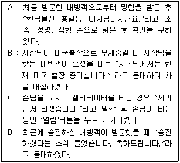
- A
- B
- C
- D
(정답률: 74%)
20. 아래의 상황에서 한 비서의 업무 처리 방법으로 가장 적절치 못한 것은?
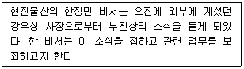
- 회사 임원 및 비서들에게 사내 메일을 통해 부고장을 보낸다.
- 주요 신문사에 연락하여 부음기사를 내도록 한다.
- 상사의 친구와 지인들에게 전화나 팩스로 부음을 알린다.
- 전화를 받고 바로 장례식장으로 가서 조문을 하고 장례일정을 돕는다.
(정답률: 67%)
2과목: 사무영어
21. 다음 영어와 그 뜻이 옳게 짝지어지지 않은 것을 고르시오.
- CFO : 최고재무경영자
- Chief Executive Officer : 최고 경영자
- Vice-President : 부사장
- Executive : 부장
(정답률: 75%)
22. 다음 중 영어 약어와 그 내용 연결이 잘못된 것은?
- CV → Curriculum vitae
- EU → European Union
- IMF → International Money Fund
- e.g. → for example
(정답률: 66%)
23. 다음 보기 중 나머지 셋과 어울리지 않는 것은?
- I'm against that because we don't have any money to burn.
- I'm not comfortable with your idea.
- I see what you're saying, but let me point out that this is not a time to focus solely on numbers.
- You can say that again.
(정답률: 68%)
24. 편지를 마무리하는 순서로 가장 적합한 것은?
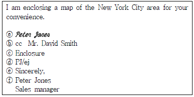
- ⓔ → ⓕ → ⓐ → ⓑ → ⓒ → ⓓ
- ⓔ → ⓐ → ⓕ → ⓓ → ⓒ → ⓑ
- ⓔ → ⓓ → ⓐ → ⓕ → ⓑ → ⓒ
- ⓔ → ⓒ → ⓐ → ⓕ → ⓓ → ⓑ
(정답률: 66%)
25. 다음 서신의 요소에 대한 설명으로 맞지 않는 것은?
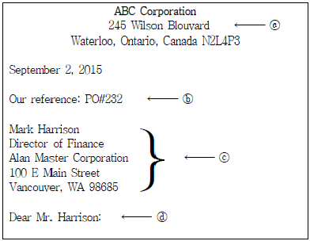
- ⓐ Letterhead : 인쇄서두. 발신자의 주소를 포함하고 있음
- ⓑ Reference Line : 문서관리를 위한 참조번호
- ⓒ Inside Address : 서신 내부에만 표시되는 수신자 소속 기관
- ⓓ Salutation : 서두인사
(정답률: 71%)
26. 다음의 영어 표현을 한국어로 번역했을 때 의미가 통하지 않는 것은?
- May I have your attention please?
당신의 참석을 부탁드려도 될까요? - I'm in charge of finance at ABC company.
저는 ABC사에서 재정을 담당하고 - I'd like to illustrate this point with some examples.
이점에 대해서 몇 가지 예를 들어 설명하겠습니다. - Let me just run over the key points again.
다시 중요 사항을 짚어보겠습니다.
(정답률: 63%)
27. 다음 보기 중 아래에 설명된 회의 준비사항이 아닌 것은?
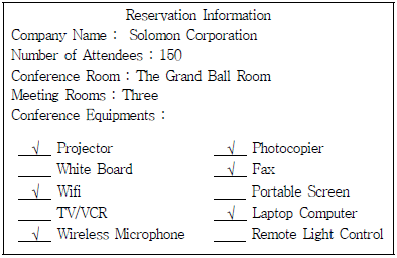
- The conference room has wifi capability.
- Photocopying and fax services are available on the conference site.
- Wireless microphones and laptop computers are included in the reservation package.
- Portable screens will be placed in each of the small meeting rooms.
(정답률: 87%)
28. 다음 중 아래 메세지 내용과 거리가 먼 것을 고르시오.
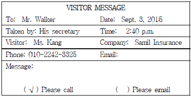
- Mr. Walker was unable to meet Ms. Kang on Sept. 3, 2015.
- The message was taken by Mr. Walker′s secretary.
- Ms. Kang waited for Mr. Walker for 40 minutes.
- Ms. Kang wants Mr. Walker to call her back.
(정답률: 76%)
29. 다음 대화의 빈칸에 들어갈 가장 적절한 표현은?
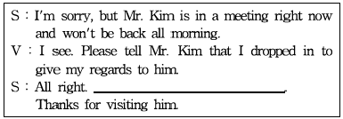
- Please go right in.
- He is expecting you.
- Please have a seat over there.
- I'll give him the message.
(정답률: 70%)
30. 다음 영어표현이 한국어로 잘못 번역된 것을 고르시오.
- You must be Mr. Kim?
미스터 김이십니까? - How long have you been with your company?
회사에서 얼마나 근무하셨습니까? - I hope the jet lag doesn't bother you much.
시차적응이 힘들지 않으셔야 할 텐데요. - I′ll come here to pick you up tomorrow.
내일 당신을 배웅하러 여기에 오겠습니다.
(정답률: 77%)
31. 대화 내용과 가장 거리가 먼 것을 고르시오.
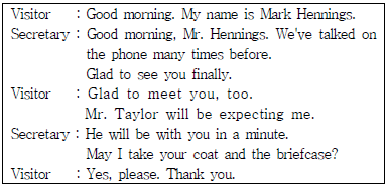
- Mr. Hennings and the secretary haven't met before.
- Mr. Taylor has an appointment to see Mr. Hennings.
- Mr. Hennings and Mr. Taylor will meet soon.
- The secretary is not sure Mr. Taylor can make it with the visitor.
(정답률: 64%)
32. 다음 보기 중 ⓐ 에 들어갈 표현으로 적절하지 않은 것은?
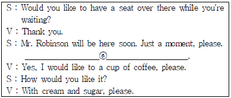
- Would you like something to drink?
- Can I get you anything to drink?
- Would you care for a drink?
- Can I have something to drink?
(정답률: 50%)
33. 다음 빈 칸에 가장 적절한 것은?
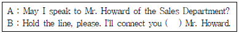
- through
- with
- to
- for
(정답률: 55%)
34. 아래의 전화대화 내용을 읽고 빈칸에 들어가기에 적절하지 않은 것을 고르시오.
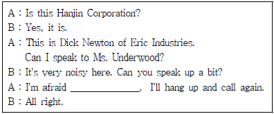
- we don't have the person by that name.
- we have a crossed line.
- there's an interference on the line.
- the lines seem to be mixed up.
(정답률: 69%)
35. 다음 전화대화를 읽고 빈칸에 가장 적합하지 않은 것을 보기에서 고르시오.
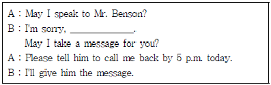
- he is in a meeting.
- he is out.
- he is available.
- he is on the other phone.
(정답률: 77%)
36. ⓐ에 들어갈 이름을 포함하여 비서가 전달해야할 가장 적절한 메모는?
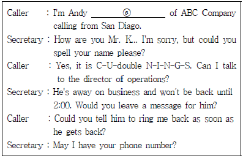
- Mr. Cuning left a message.
- Please call Mr. Cunnings back.
- Mr. Cunings has called.
- Please send a ring to Mr. K.
(정답률: 60%)
37. 다음 Boarding pass를 보고 알 수 없는 내용은?
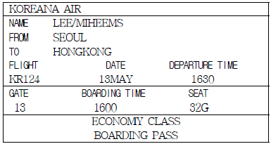
- 좌석의 등급
- 도착시간
- 비행기 편명
- 탑승구 번호
(정답률: 68%)
38. 다음의 대화를 읽고 가장 알맞은 설명을 고르시오.
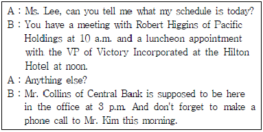
- Mr. Higgins는 Pacific Holdings의 부사장이다.
- A는 오전 10시에 Hilton Hotel에서 약속이 있다.
- A는 오후에 Mr. Collins를 사무실에서 만날 것이다.
- A는 Mr. Kim과 이미 통화한 상태이다.
(정답률: 52%)
39. 밑줄친 빈칸 B에 가장 적합한 단어를 보기에서 고르시오.(39번 공통지문 문제)
- refer
- remind
- require
- reconfirm
(정답률: 76%)
3과목: 사무정보관리
40. 두 장 이상으로 이루어지는 중요한 문서의 앞장 뒷면과 뒷장의 앞면에 걸쳐서 찍는 도장이나 행위를 의미하는 용어는 무엇인가?
- 간인
- 인장
- 직인
- 병인
(정답률: 76%)
41. 다음 중 문서의 기능으로 가장 거리가 먼 것은?
- 의사전달기능
- 의사보존기능
- 자료제공기능
- 교육훈련기능
(정답률: 81%)
42. 외부 시스템을 이용해서 메일을 수·발신 할 수 없고 해당 사이트에서만 사용할 수 있는
- 웹메일
- POP3 메일
- 스마트메일
- SMTP 메일
(정답률: 57%)
43. 다음 전자우편의 기능에 관한 설명 중 가장 적절하지 않은 것은?
- 동시받기지정(동보)를 통해 같은 내용의 문서를 여러 사람에게 동시에 보낼 수 있다.
- '전송'을 이용하면 첨부메일을 포함하여 받은 전자우편을 다른 수신자에게 보낼 수 있다.
- '참조'란 본래의 수신인 이외 다른 수신인을 지정하여 발신하는 것이며, 본 수신인에게는 다른 수신인의 전자우편 주소가 표시되지 않는다.
- '첨부파일'의 용량이 클 경우 zip파일로 압축하면 용량이 줄어든다.
(정답률: 69%)
44. 다음 중 사무실에서 필요한 정보를 얻기 위한 가장 올바른 신문 구독 및 자료 정리의 방법은?
- 한 가지의 신문을 구독하여 중복되지 않은 꾸준한 정보를 얻는다.
- 일간지와 경제지 등 여러 종류의 신문을 구독하여 다양한 시선으로 사건을 파악한다.
- 매일 많은 시간을 투여하여 자세한 내용을 파악한다.
- 회사에 관한 모든 기사를 스크랩해 두어 다음에 활용할 수 있게 한다.
(정답률: 75%)
45. 다음 중 정보수집과 관련하여 가장 부적절하게 설명된 것은?
- 수집된 정보가 훼손되지 않도록 원자료를 모두 상사에게 드린다.
- 정보는 필요에 따라 분석하거나 가공하여 활용할 수 있다.
- 수치는 도표화하거나 그래프화하여 자료를 요약할 수 있다.
- 필요한 정보 획득에 용이하도록 평소에 정보출처에 관심을 가져둘 필요가 있다.
(정답률: 78%)
46. 다음 중 기밀문서의 처리에 대한 비서의 행동으로 가장 옳지 않은 것은?
- 정비서는 책상서랍과 서류함을 잠근 후 열쇠를 가지고 퇴근한다.
- 장비서는 사용용도가 끝난 서류사본은 문서세단기를 사용하여 없앤다.
- 최비서는 반드시 회사에서 정한 규정에 따라 문서를 처리한다.
- 안비서는 문서작성 시 2분간 입력이 없으면 자동으로 스크린 세이버가 작동하도록 설정해 두었다.
(정답률: 50%)
47. 다음 중 사무자동화 기기의 사용에 대한 설명으로 가장 옳지 않은 것은?
- 플로터는 전화회선을 사용해 문서를 송ㆍ수신하는 장치이다.
- 문서세단기는 문서를 완전히 폐기하기 위해 원형을 알아볼 수 없도록 자르는 장치이다.
- 전자칠판은 칠판에 기록한 내용을 저장하고 출력해서 볼 수 있다.
- A4크기 문서를 B4크기로 복사하기 위해서 확대복사 기능을 사용한다.
(정답률: 61%)
48. 다음 중 와이어 제본기의 장점에 대한 설명으로 가장 적당하지 않은 것은?
- 360도로 자료를 펼치거나 접기 쉽다.
- 링 크기가 작아서 보관이 편하다.
- 제본 후 자료의 첨삭이 용이하다.
- 제본 결과가 견고하다.
(정답률: 56%)
49. 공기업에 근무 중인 박비서는 봉투 작성 업무를 수행하고 있다. 다음 중 경칭 사용이
- 대한능률산업협회장 귀하
- 주주 귀하
- 대표이사 김수미님
- 박인수 귀하
(정답률: 59%)
50. 초청장, 행사 안내문, 인사장, 축하장, 감사장 등과 같이 친분이나 거래 관계를 유지하고 있는 조직끼리 관계 유지에 대한 표시로 주고받는 문서를 무엇이라고 하는가?
- 거래 문서
- 의례 문서
- 연락 문서
- 공고 문서
(정답률: 68%)
51. 사무기기 사용 및 관리 시 주의점 중 가장 바람직하지 않은 것은?
- 복사기 사용 시 복사용지를 손으로 잘 간추려서 용지보급함에 넣는다.
- 복사기에 종이가 걸렸을 때에는 찢어진 종이까지 완전히 제거한다.
- 문서를 세단할 때는 시간절약을 위해 한 번에 많은 양을 분쇄하기 위해 한꺼번에 넣는다.
- 문서를 제본할 때에는 서류량에 맞는 링사이즈 및 표지를 선택한다.
(정답률: 77%)
52. 다음 사무 환경 요소에 관한 설명 중 가장 적절하지 않은 것은?
- 색채는 온도 감각을 지니고 있으므로, 붉은 색을 이용하여 따뜻한 느낌을 줄 수 있다.
- 자연 조명은 눈의 피로를 적게 하므로 창문의 크기를 이용하여 충분히 활용한다.
- 실내온도 상부와 하부의 온도차가 크면 열환경의 쾌적성이 극대화 된다.
- 반간접조명은 직접조명과 간접조명을 절충한 방식으로 사무실 조명으로서 눈의 피로를
(정답률: 77%)
53. 다음 중 전자문서의 특징에 대한 설명으로 가장 옳지 않은 것은?
- 비정형화된 복잡한 양식의 문서 작성이 용이하다.
- 결재 과정에서 불필요한 시간 낭비를 줄여준다.
- 문서 수발에 따르는 시간, 인력, 비용 등을 절감시킨다.
- 신속하고 정확하게 문서를 검색할 수 있다.
(정답률: 67%)
54. 다음 중 전자문서관리 시스템의 장점으로 가장 거리가 먼 것은?
- 신속한 의사결정
- 문서관리의 투명화
- 문서기획 시간의 단축
- 저장 공간의 효율화
(정답률: 50%)
55. 아래 기사를 보고 가장 올바르지 않은 설명을 고르시오.
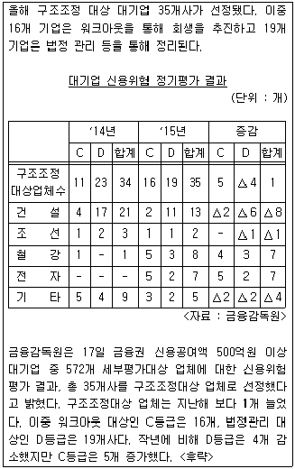
- 작년보다 구조조정 대상 대기업이 증가했다.
- 건설업이 작년보다 감소하여 건설업계 상황이 좋아진 것을 알 수 있다.
- 작년보다 회생의 기회를 가진 업체의 수는 증가하였다.
- 조선업계는 작년과 동일한 업체가 C등급을 받았다.
(정답률: 72%)
56. 다음은 2014년 3분기부터 2015년 3분기까지의 분기별 ELS발행현황에 대한 그래프이다. 이에 대한 설명으로 가장 적절하지 않은 것은?
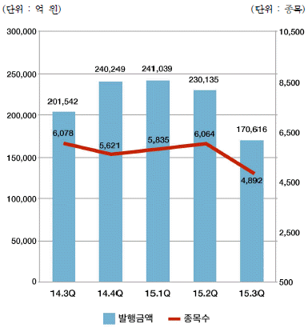
- 2015년 1분기에 ELS발행 사상 최고발행액을 기록한 후 2분기 연속 감소세를 보이고 있다.
- 2015년 2분기 ELS발행종목수는 전년 4분기에 비해서 증가하였다.
- 2015년 3분기 ELS발행금액은 17조 616억원으로 전분기에 비해서 감소하였다.
- 2015년 3분기 ELS발행금액은 전년 동기에 비해서 감소하였다.
(정답률: 48%)
57. 회사 사옥 이전을 안내하는 우편물 350통을 고객 및 거래처에 발송해야 하는 경우 사용하기에 가장 적당한 우편제도는?
- 요금별납
- 특급우편
- 내용증명
- 수취인요금부담
(정답률: 73%)
58. 다음 중 인터넷 정보검색을 위한 웹 브라우저에 대한 설명으로 가장 적절하지 않은 것은?
- 웹 브라우저를 이용하여 자주 방문하는 웹사이트 주소를 관리할 수 있다.
- 웹 브라우저를 이용하여 HTML문서를 저장할 수 있다.
- 웹 브라우저를 이용하여 웹 페이지를 인쇄할 수 있다.
- 대표적인 웹 브라우저로는 구글, 사파리 등이 있다.
(정답률: 59%)
59. 다음은 기업대출 잔액 추이에 대한 그래프이다. 이에 대한 설명으로 가장 거리가 먼 것은?
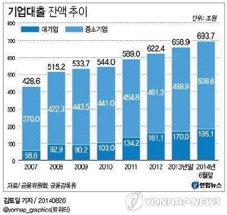
- 2007년부터 기업대출 잔액은 증가하고 있다.
- 중소기업의 대출잔액 비율은 대기업보다 높다.
- 대기업의 대출비율이 2014년 6월말 기준으로 2008년 말보다 2배 가까이로 증가했다.
- 2009년 이후 금융권의 중소기업 대출 비중은 감소하는 추세이다.
(정답률: 59%)